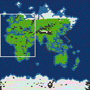

<?php echo $text_small ?>
Last updated 1/14/2000
<?php echo $_text_small ?>
<!--
<P><A HREF="updates/earthmap.tar.gz"></A></P>

<?php echo $text_small ?><B>Jan Echternach's World Map (sans America):</B><BR>
"I've created an earth map that should be much better than those two
unrealistic maps from <A HREF="http://www.activision.com/games/civilization/">Activision</A>. I've spend much time creating land masses with mostly correct shape
and terrain types. And it has historic starting locations for most
civilizations.
<?php echo $_text_small ?>

<?php echo $text_small ?>
"There is only one major disadvantage of this map: There was no place
left for America.
<?php echo $_text_small ?>

<?php echo $text_small ?>
"One problem: if you save this map as a single player map and then load
the single player map: It's always the same 7 AI civilizations. If
you want to play against other civilizations with other starting
points, you have to remove the other starting points before saving as a
single player map."
<?php echo $_text_small ?>

<?php echo $text_small ?>
You can download Jan Echternach's map by clicking <A HREF="updates/earthmap.tar.gz">here</A>.
<?php echo $_text_small ?>
-->

<?php echo $text_small ?>
<B><A HREF="downloads/Dr.Fo-Scot-4000BC.gz">Map of Ohio</A></B> from <A
HREF="mailto:pgunn01@ibm.net">Pat Gunn</A><BR>
This is a map of Ohio with some frills and alterations for Civilization:
Call to Power for Linux (version 1.2). <A
HREF="downloads/Dr.Fo-Scot-4000BC.gz">Click here to download.</A>
<?php echo $_text_small ?>
